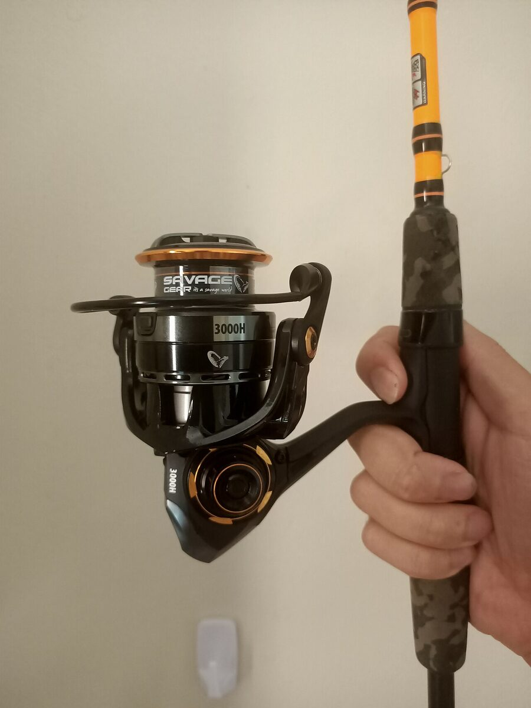

Najkrótsza odpowiedź
Do kontroli przynęty i dalekiego kontaktu częściej pasuje plecionka; do amortyzacji i prostego zestawu częściej żyłka. Ostateczny wybór zależy od metody, przeszkód i przyponu.
Czym właściwie się różnią
Budowa i rozciągliwość
Żyłka i plecionka są różnymi produktami, a ich materiał, splot, średnica i deklarowana wytrzymałość zależą od konkretnego modelu. Nie przypisuj wszystkim nylonowym żyłkom jednego zakresu rozciągliwości ani wszystkim plecionkom „zerowej” rozciągliwości — liczby z reklam i etykiet mają sens wyłącznie z podanym modelem oraz metodą pomiaru. Przed zakupem sprawdź kartę producenta, a na wodzie przetestuj hamulec, węzły i prowadzenie zestawu.
Średnica a wytrzymałość
Przy porównaniu linek nie zakładaj, że deklarowana średnica sama wyznacza dystans rzutu, zachowanie w nurcie albo wytrzymałość. Owalność splotu, powłoka, węzeł i stan linki mają znaczenie, a dane różnych producentów nie są automatycznie rankingiem. Porównuj parametry w obrębie konkretnej karty produktu i wybierz linkę po krótkim teście z własnym zestawem.
Punkt po punkcie
Czułość i zacięcie — przewaga plecionki
Plecionka może ułatwiać zauważenie ruchu przynęty lub linki, zwłaszcza gdy zestaw jest lekki i odległy, ale nie jest warunkiem skutecznego jiggowania ani gwarancją zacięcia. Zasięg, wędka, hamulec, węzeł i przypon również zmieniają odczucie. Przetestuj obie linki na tym samym montażu, a różnicę oceniaj po kontroli, nie po pojedynczym braniu.
Amortyzacja i hol — przewaga żyłki
Żyłka może amortyzować część obciążenia w zestawie, a plecionka przenosi obciążenie inaczej; żadna z nich nie zastąpi poprawnego hamulca i dopasowanego haka. Nie zakładaj, że jeden rodzaj linki ochroni każdy pysk ryby albo wybaczy błąd podczas holu. Ustaw hamulec z uwzględnieniem najsłabszego elementu i sprawdź zestaw w kontrolowanych warunkach.
Odporność i trwałość — remis z gwiazdką
Odporność na ścieranie, promieniowanie UV, wodę i mróz zależy od materiału oraz konkretnej konstrukcji linki. Nie ma podstaw, by obiecywać określoną liczbę sezonów albo zakładać, że jedna linka zawsze lepiej zniesie kamienie, muszle czy lód. Po zaczepie i przed wyjściem oglądaj pierwszy odcinek linki, węzły oraz przypon; element z widocznym uszkodzeniem wymień.
Widoczność i prezentacja
Widoczność linki i sposób prezentacji zależą od przejrzystości wody, światła, średnicy, kąta oraz zachowania ryb. Fluorocarbon nie jest niewidoczny, a przypon długości metr–dwa nie jest normą dla wszystkich metod. Jako testowalny punkt startowy praktyki redakcyjnej porównaj ten sam montaż z krótkim przyponem i bez niego tam, gdzie regulamin oraz ryzyko przecięcia linki na to pozwalają.
Cena i eksploatacja
Cena, trwałość i wygoda użytkowania nie dają się uczciwie przeliczyć na jeden koszt sezonu. Stan linki, częstotliwość łowienia, zaczepy i prawidłowe nawinięcie mogą zmienić rezultat bardziej niż sama cena. Zanim przewiniesz linkę lub wybierzesz droższy model, sprawdź zalecenia producenta dla tej szpuli oraz rzeczywisty stan odcinka roboczego.
Rekomendacje według metody
Spinning
W spinningu plecionkę można przetestować, gdy zależy Ci na kontroli linki i przynęty, a żyłkę — gdy jej zachowanie lepiej pasuje do Twojego zestawu. Nie traktuj żadnej z nich jako standardu dla wszystkich przynęt, dystansów i temperatur. Przy ryzyku kontaktu ze szczupakiem dobierz przypon ograniczający przecięcie przez zęby, kontroluj go po każdym zaczepie i przestrzegaj lokalnych zasad połowu.
Feeder i grunt
W feederze i gruncie wybór linki zależy od dystansu, nurtu, ciężaru koszyka, wędki i hamulca. Granica 40 m ani średnica 0,20–0,25 mm nie są uniwersalnym progiem: potraktuj je jako punkt startowy praktyki redakcyjnej i sprawdź, czy zestaw pozostaje kontrolowany przy własnym rzucie oraz holu. Przypon i linkę główną dobieraj do deklaracji konkretnych produktów oraz warunków łowiska.
Spławik i karp
W spławiku, matchu i karpiowaniu oba rodzaje linki mogą wymagać innych kompromisów. Zakres 0,28–0,35 mm jest punktem startowym praktyki redakcyjnej dla części zestawów karpiowych, a nie normą bezpieczeństwa lub obietnicą holu. Wybór zmień po ocenie odległości, zaczepów, masy zestawu, regulaminu i deklaracji producenta.
Werdykt
Nie „czy", tylko „do czego"
Nie wybieraj linki „na zawsze”, lecz do konkretnego zestawu i warunków. Zanim kupisz drugą szpulę, zapisz metodę, masę montażu, dystans, przeszkody oraz to, czy utrzymujesz kontrolę nad zestawem. Takie porównanie jest bardziej miarodajne niż przypisanie żyłce lub plecionce stałej przewagi.
Linka w warunkach, nie w sloganach
Rola tego porównania: wybrać właściwość linki do warunków pierwszego wyjścia. Średnica, wytrzymałość i nośność z opakowań różnych producentów nie są bezpośrednim rankingiem; porównuj konkretne deklaracje i stan linki.
| Scenariusz z brzegu | Założenie | Pierwszy wybór | Warunek bezpieczeństwa |
|---|---|---|---|
| Jig na spadku | Liczy się kontakt z przynętą. | Plecionka z dobranym przyponem. | Kontroluj przetarcia po każdym kontakcie z dnem. |
| Mały wobler w klarownej wodzie | Ważna jest amortyzacja i spokojna prezentacja. | Żyłka albo zestaw z dłuższym przyponem. | Nie oceniaj linki wyłącznie po jej widoczności. |
| Możliwy szczupak wśród przeszkód | Zęby mogą przeciąć zwykłą linkę. | Linka główna według metody plus przypon odporny na zęby. | Wymień uszkodzony przypon przed kolejnym rzutem. |
Co sprawdzić nad wodą
- pierwszy metr linki i przypon pod kątem przetarć oraz węzłów;
- czy nawój na szpuli jest równy i nie tworzy pętli;
- czy warunki — mróz, kamienie, roślinność lub wiatr — nie zmieniają wyboru.
Czego nie obiecuje ten poradnik
Nie gwarantuje lepszej liczby brań ani nie zastępuje bezpiecznego przyponu na wodzie ze szczupakiem. Nie podaje też uniwersalnej średnicy bez danych o metodzie, przynęcie i przeszkodach.
Decyzję domknij przez gatunek, metodę spinningową, nawój kołowrotka, warunki sezonu i status lokalnej wody.
Źródła i granice poradnika
Stan źródeł: 20 lipca 2026 r. Karta PowerPro firmy Shimano jest przykładem deklaracji konstrukcji i wytrzymałości konkretnej plecionki — nie jest niezależnym porównaniem marek ani dowodem dla innych modeli. Zasady ochrony przy połowie szczupaka sprawdzaj w rozporządzeniu MRiRW w ELI, biologię gatunku w FishBase: Esox lucius, a ograniczanie kontaktu z rybą w zaleceniach Environment Agency. Film osadzony wyżej nie jest źródłem dowodowym. Średnica, wytrzymałość, przypon i wybór linki są testowalnym punktem startowym praktyki redakcyjnej, nie uniwersalnym standardem ani gwarancją skuteczności.
Sprzęt do poradnika
Porównaj pasujące kategorie sprzętu
Poniższe kategorie odpowiadają sprzętowi omawianemu w tym poradniku. To linki afiliacyjne — FishPoint może otrzymać prowizję, ale cena dla Ciebie się nie zmienia.
Komentarze